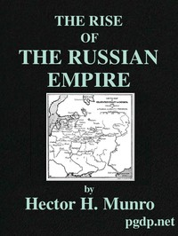

This is a sampling of the free books available from Project Gutenberg.
To leave a comment about one of our books please click here.
|  | The Rise of the Russian Empire | by Saki |
|
| The Principal Species of Wood: Their Characteristic Properties | by Charles H. Snow |
|
A History of Roman Literature | by Harold North Fowler |
|
Three Years in Western China | by Alexander Hosie |
| |
The Art of War in the Middle Ages A.D. 378-1515 | by C. W. C. Oman |